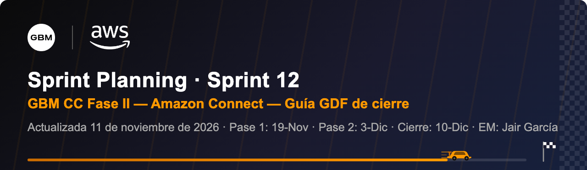

Sprint Planning 12 · Guía GDF de cierre

El Sprint 12 es el último. Lleva el pase 2 a Stage y su UAT, los dos pases a producción y todo lo que el GDF pide para cerrar bien: hardening de seguridad, documentación, handoff operativo a GBM, aceptación por escrito y el close-out.
El dato más importante para la sesión es este: en el Sprint 11 hay 15 historias y ninguna está cerrada. Los 42 ítems hechos son subtareas. Lo que no cierre el 18-Nov se lleva al Sprint 12 y viaja en el pase 2. En la sesión se confirmó que al pase 1 no entra nada extra: solo lo que ya está en Stage.
| Ítem | Historia | Subtareas | Estado | Qué decidir en el planning |
|---|---|---|---|---|
| AC-682 | HU-07 Configuración sin código por supervisores (callback) | 11 de 14 | Casi lista | Faltan tests, documentación y pase a Stage. Cierra en S11. |
| AC-502 | Registro de llamadas outbound sin respuesta | 7 de 8 | Casi lista | Solo falta tests y documentación. Cierra en S11. |
| AC-681 | HU-05 Callback en cola | 8 de 10 | Casi lista | Faltan pase a Stage y UAT, sin responsable. Asignar. |
| AC-793 | Iterar revisión de seguridad del repositorio | 9 de 10 | Casi lista | AC-796 (resource policy del API Gateway) sigue en To Do. El DSR dice que ya está. Confirmar con Rene Ramos y cerrar. |
| AC-1153 | Registro de callback | 0 de 6 | En curso | 5 subtareas en curso. Validar si llega al 18-Nov. |
| AC-498 | WhatsApp outbound: respuesta directa al asesor | 0 de 5 | En curso | 4 en curso. Depende de la definición de Abigail sobre tiempo de espera y ruta. |
| AC-459 | HU-23 Workspace custom por rol | 6 de 22 | En riesgo | La historia más grande: 14 subtareas sin iniciar, incluida seguridad (WAF, OAC, authorizer). Decidir alcance mínimo para producción. |
| AC-456 | HU-06 Outbound y callback WhatsApp | 0 de 8 | En riesgo | 8 subtareas sin iniciar y 7 sin responsable. Asignar o mover a cambio de alcance. |
| AC-673 · AC-676 · AC-678 | Outbound de voz (Customer Service y asesor interno) y WhatsApp outbound asesor interno | — | En curso | Entran en el segundo pase a Stage. Confirmar fecha. |
| AC-918 | Callback anti-duplicados | 0 de 2 | En curso | La prueba de duplicados está asignada a Brenda Merani Martin. Confirmar. |
| AC-684 | HU-32 Dashboards operativos | 0 de 1 | Bloqueado | Bloqueado por accesos de Nubity. Si no se libera esta semana, sale de producción. |
| AC-683 | HU-08 Manejo de errores y observabilidad | 0 de 1 | Sin iniciar | Abigail pidió decidirlo por correo: entra en S11/S12 o sale del alcance. |
| AC-1145 | UAT integral (identificación, routing, workspace, mejoras) | 1 de 8 | En curso | Dos subtareas de chat asignadas a Brenda Gabriela Gil Hernández, que está de vacaciones. Reasignar a Carlos Ramos Flores. |
| Daily | Decisión o dato | Estado |
|---|---|---|
| 3-Nov | Pase a Stage hecho. Sabrina Tejada mandó el set completo de UAT. Mixpanel desbloqueado. | Hecho |
| 3-Nov | GBM Plus como área default de Salesforce para callback, outbound y colas sin mapeo. | Acordado |
| 4-Nov | Producción ya no es el 6-Nov. GBM pide capacitar a sus equipos y cerrar permisos antes de liberar. | Cambio |
| 4-Nov | Walter Hiram Amores Macías pide el checklist de producción para preparar import, export y permisos. | Pendiente |
| 9-Nov | Fecha objetivo de producción: viernes 20-Nov. Puede ir a la última semana de noviembre para incluir el segundo pase a Stage. | Por confirmar |
| 9-Nov | Cierre del proyecto / handover: 27-Nov (se movió al 10-Dic el 11-Nov). Demo reprogramada. | Reemplazado |
| 9-Nov | Permisos para el miércoles 11 y videos de capacitación esta semana. Abigail ya arma la capacitación. | En curso |
| 9-Nov | Definiciones del bot (tiempo antes del cierre, textos de agradecimiento) entre el 9 y el 10. José Luis Reyes implementa. | Pendiente |
| 9-Nov | Accesos de Silvana García y Sabrina Tejada siguen sin confirmar. | Silvana OK |
| 11-Nov | Producción en dos pases: pase 1 el jueves 19-Nov por la tarde y pase 2 el jueves 3-Dic por la tarde. Cada uno con el viernes de respaldo. | Acordado |
| 11-Nov | Pase 2 a Stage a más tardar el 25-Nov. UAT de GBM del 25 al 27-Nov en máximo 2 días. | Acordado |
| 11-Nov | Capacitación a los asesores el martes 17 y miércoles 18-Nov. | Agendado |
| 11-Nov | Cierre del proyecto se mueve al 10-Dic. Freeze de GBM desde el 11-Dic. | Por confirmar |
| 11-Nov | Silvana García ya tiene acceso. Sabrina Tejada entró desde una VM sin VPN; se revisa con GBM. | Revisar |
| Min | Bloque | Qué sale de aquí |
|---|---|---|
| 0–10 | Revisión del Sprint 11 | Qué historias cierran el 18-Nov y cuáles no. Usar la tabla de la sección 2. |
| 10–20 | Corte de alcance para producción | Lista final de lo que entra a producción. Lo que no entra se registra como cambio de alcance (SCM) en el decision log, con la razón y el visto bueno de Abigail. |
| 20–35 | Plan del Sprint 12 (cierre) | Las 6 historias de cierre con responsable y fecha. Hoy 26 de 31 ítems no tienen responsable. |
| 35–45 | Fecha de producción y Go-Live | Acordado: 19-Nov y 3-Dic, jueves por la tarde. Checklist, ventana, rollback y monitoreo de 24 h. |
| 45–55 | Mecanismos GDF de cierre | Repasar la sección 6 y asignar dueño a cada mecanismo. |
| 55–60 | Riesgos y acuerdos | Confirmar riesgos, decisiones pendientes de GBM y siguiente revisión. |
| Ítem | Historia | Responsable propuesto | Fecha propuesta |
|---|---|---|---|
| AC-1170 | Pasaje a STG de outbound y callback (segundo pase) | Silvana García (TL Nubity) | A más tardar Mié 25-Nov |
| AC-937 | UAT completo end-to-end con GBM | Abigail + Carlos Ramos Flores · Sabrina Tejada coordina | Pase 1: en curso · Pase 2: 25 al 27-Nov |
| AC-942 | Hardening de seguridad: cierre de hallazgos, rotación de secretos, WAF y resource policies en PRD, auditoría IAM | Rene Ramos (TL AWS) | Antes de cada pase (18-Nov y 2-Dic) |
| AC-952 | Go-Live: checklist, deploy final, monitoreo de 24 h, comunicación | Silvana García + Walter Hiram Amores Macías · Jair García comunica | Jue 19-Nov y Jue 3-Dic (tarde) |
| AC-947 | Documentación técnica final: arquitectura, runbooks, troubleshooting, inventario | Silvana García + Rene Ramos | Antes del 9-Dic |
| AC-957 | Handoff operativo a GBM: sesión, accesos documentados, capacitación de admin, plan de soporte | Sabrina Tejada + Jair García | Jue 10-Dic |
Los responsables son una propuesta para validar en la sesión. Lo que se lleve del Sprint 11 (por ejemplo, parte de AC-459 o AC-456) tiene que caber en el pase 2 sin mover el 3-Dic. Si no cabe, es cambio de alcance.
Según el GDF200, el proyecto entra a la fase Close. El close-out lleva entre 4 y 6 horas, es obligatorio en todos los engagements y es facturable. Abajo va cada mecanismo con lo que pide el framework, cómo aplica a GBM y quién lo lleva.
| Mecanismo GDF | Qué pide el framework | Cómo aplica a GBM | Dueño | Estado |
|---|---|---|---|---|
| DRR / Change Management | Revisión de preparación antes de entregar, control de cambios y plan de rollback. | Aplicarlo al segundo pase a Stage y al Go-Live: qué cambia, cómo se revierte, quién aprueba. | Rene Ramos + Silvana García | Por hacer |
| DSR | Revisión de seguridad de todo entregable con código. Nada se entrega sin DSR. | V2189474576 revisado por Bruno Costa: Compliant. El código nuevo se escanea antes de cada pase (acordado con Rene Ramos el 11-Nov). | Jair García | Revisado |
| Scope Change Management | Todo cambio de alcance se evalúa por costo y tiempo y queda documentado. | Lo que no entre a producción (por ejemplo dashboards o manejo de errores) se registra en el decision log con el OK de Abigail. | Jair García | En la sesión |
| Riesgos abiertos | Si el cliente decide no aplicar un control, se documenta por escrito y va a su registro de riesgos. | Hoy el DSR no deja riesgos abiertos. Confirmar AC-796 (resource policy) antes de cerrar. | Rene Ramos | Confirmar |
| Deliverable Acceptance | Aceptación por escrito de cada entregable, guardada en Salesforce. | Una aceptación por pase: después del 19-Nov y después del 3-Dic. M1 ya está en producción. | Jair García · Abigail firma | Por hacer |
| D2O (Delivery to Operations) | Transferencia formal a quien opera la solución. | AC-957: sesión de handoff, runbooks (AC-949), troubleshooting (AC-950), inventario (AC-951), capacitación de admin (AC-960) y plan de soporte (AC-961). | Sabrina Tejada + Jair García | Por hacer |
| D2S (Delivery to Sales) | Regresar al equipo de cuenta las oportunidades detectadas. | PRD de Fase III y los ítems del Sprint TBD. Entregar a Luis Gómez y al account team. | Jair García | Por hacer |
| Close-out meeting | Reunión de cierre con plantilla Word o PPT. Primero la reunión y después el PDF, nunca solo por correo. | Se mueve al 10-Dic (por confirmar). Usar el CBO Canvas para mostrar el valor logrado por milestone. | Jair García | Agendado |
| Financieros | Timecards y gastos aprobados, partner liquidado, factura final. | Aprobar timecards de Nubity, cerrar el planner con End Date correcto y emitir la última factura. | Jair García | Por hacer |
| Accesos y activos | Revocar accesos y devolver equipo. | Quitar accesos de Nubity y AWS en el ambiente de GBM (VPN, Zscaler, Connect) después del handoff. | Abigail + Walter Hiram Amores Macías | Por hacer |
| Propiedad intelectual | Recuperar y archivar la IP sin datos del cliente, con acuerdo escrito del mecanismo. | Ticket V2188981412 cerrado desde junio. Confirmar con Valdomiro Junior si se reabre. Archivo en GitLab con PR-059806. | Jair García + Rene Ramos | Revisar |
| VOC / CSAT | CSAT obligatorio a 2 o más contactos desde Salesforce. Pedir referencias. | Mandar CSAT al cierre. Si GBM tiene alguna restricción para contestar encuestas, documentar la excepción. | Jair García | Por hacer |
| Lecciones aprendidas | Registrarlas en APG, Knowledge Mine o PMT, ya redactadas. | Accesos del partner, definiciones tardías, UAT con dueño por prueba, defaults para no bloquear. | Jair García | Por hacer |
| Status reporting | Reporte semanal hasta el cierre. | Seguir con el reporte ejecutivo y el status de Salesforce cada viernes. | Jair García | En marcha |
| Fecha | Hito | Mecanismo GDF |
|---|---|---|
| 11 y 12-Nov | Ajustes del UAT de Dev a Stage. Abigail cierra el UAT de llamadas. | DRR |
| Lun 16-Nov | Festivo en México. GBM no labora. | — |
| Mar 17 y Mié 18-Nov | Capacitación a los asesores. OK de seguridad del pase 1. Cierre del Sprint 11 (18-Nov). | D2O · DSR |
| Jue 19-Nov (tarde) | Pase 1 a producción: Entidad Cliente, Salesforce y registro de actividades. | Go-Live · DRR |
| Vie 20-Nov | Respaldo para ajustes del pase 1. Pedir aceptación escrita del pase 1. | Acceptance |
| Lun 23-Nov | Festivo en Argentina (equipo de Nubity). | — |
| A más tardar Mié 25-Nov | Pase 2 a Stage: callback, outbound y app custom. | DRR |
| 25 al 27-Nov | UAT de GBM del pase 2 (máximo 2 días). | Acceptance |
| Lun 30-Nov y Mar 1-Dic | Ajustes del UAT y últimos cambios en Stage. OK de seguridad del pase 2. | DSR |
| Jue 3-Dic (tarde) | Pase 2 a producción: callback y outbound. | Go-Live · DRR |
| Vie 4-Dic | Respaldo para ajustes del pase 2. | — |
| Lun 7 y Mié 9-Dic | Soporte posterior (Mar 8-Dic festivo en Argentina). Aceptación escrita del pase 2. D2O, D2S y documentación final. | D2O · D2S · Acceptance |
| Jue 10-Dic | Handoff operativo y close-out (por confirmar). | Close · VOC |
| Vie 11-Dic | Inicia el freeze de GBM. CSAT, lecciones aprendidas, financieros, IP y retiro de accesos. | Close · VOC |
| Nivel | Riesgo o decisión | Propuesta |
|---|---|---|
| Alto | 15 historias del Sprint 11 abiertas a 7 días hábiles del cierre. AC-459 y AC-456 son las más atrasadas. | Cortar alcance hoy. Definir el mínimo para producción y registrar el resto como cambio de alcance. |
| Alto | Accesos de Nubity sin confirmar. Frenan dashboards, videos y parte del UAT. | Fecha límite: miércoles 11. Si no se liberan, dashboards salen de producción. |
| Medio | Proyecto extendido al 10-Dic: más semanas de horas de Nubity y del Investment de AWS. | Revisar planner y presupuesto esta semana y ajustar el End Date en Salesforce. |
| Medio | Definiciones pendientes de GBM: bot, WhatsApp outbound y manejo de errores. | Respuesta antes del 12-Nov. Si no llega, se aplica el default acordado o sale del alcance. |
| Medio | Ticket de propiedad intelectual cerrado antes de tiempo. | Confirmar con Valdomiro Junior y planear el archivo para la semana del 7-Dic. |